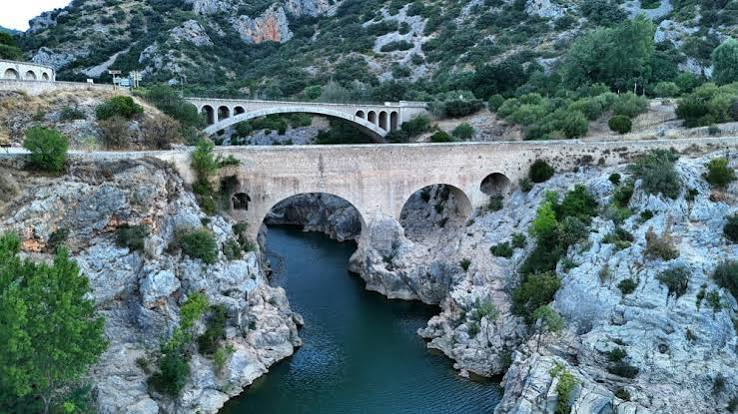

Pont du DiablePatrimoine mondial de l'UNESCO


⟹ Sites Emblématiques ⟸
Un passage stratégique à l’entrée des gorges de l’Hérault. Le Pont du Diable se dresse au lieu-dit du Gouffre Noir, à l’endroit où le fleuve Hérault quitte les reliefs calcaires et où les gorges se resserrent fortement. Cette position en faisait un point de franchissement essentiel entre la vallée, les terres d’Aniane et le territoire de Gellone, aujourd’hui Saint-Guilhem-le-Désert. Avant l’édification d’un pont permanent, traverser un fleuve méditerranéen soumis à des crues soudaines pouvait être difficile et dangereux.
Une construction monastique au début du XIe siècle. L’ouvrage est traditionnellement daté des années 1025-1031. Sa construction résulte d’un accord entre les puissantes abbayes bénédictines d’Aniane et de Gellone, qui contrôlaient les deux rives de l’Hérault. Les textes associent notamment cette décision aux abbés Pons d’Aniane et Geoffroy de Gellone. Le projet répondait à un besoin très concret : assurer une liaison durable entre les deux établissements religieux et faciliter les déplacements des habitants, marchands et voyageurs dans la vallée.

L’accord qui encadrait l’ouvrage avait aussi pour objectif d’éviter que l’une des deux abbayes ne transforme le passage en instrument de domination. Il prévoyait qu’aucun fort ni aucune chapelle ne soit annexé au pont et qu’aucun péage n’y soit perçu. Le franchissement devait donc demeurer libre. Cette disposition est particulièrement remarquable dans une société médiévale où ponts, portes et passages constituaient fréquemment des lieux de perception de droits.
Une prouesse de l’architecture romane. Long d’environ 50 mètres et dominant le fleuve d’une quinzaine à une vingtaine de mètres selon les points de mesure, le pont est bâti en pierre et repose sur deux grandes arches en plein cintre. Deux ouvertures secondaires, traditionnellement appelées « ouïes », permettent à une partie des eaux de s’écouler lorsque l’Hérault est en crue et diminuent ainsi la pression exercée sur la maçonnerie. L’implantation profite du resserrement naturel de la vallée et de solides appuis rocheux.
La sobriété de ses formes, l’appareil de pierre et les arcs en plein cintre inscrivent l’ouvrage dans les débuts de l’art roman méridional. Sa résistance est d’autant plus remarquable que l’Hérault connaît des épisodes de crues violentes. Pendant près d’un millénaire, réparations et entretiens successifs ont permis de conserver la structure médiévale et sa silhouette caractéristique.
Sur les routes des hommes et des pèlerins. Le pont reliait les réseaux de chemins qui desservaient Aniane, Gellone et les villages de la moyenne vallée de l’Hérault. L’abbaye de Gellone, fondée à l’époque carolingienne et devenue un important centre de pèlerinage autour du tombeau de saint Guilhem, attirait de nombreux fidèles. Avec le développement des grands itinéraires de pèlerinage médiévaux, le passage s’inséra dans l’ensemble des voies fréquentées par les pèlerins se dirigeant vers Saint-Jacques-de-Compostelle.
Le pont ne doit donc pas être considéré comme un monument isolé : il appartient à un paysage historique associant l’abbaye de Gellone, Saint-Guilhem-le-Désert, Aniane, les chemins anciens et les gorges de l’Hérault. Il matérialise les relations, parfois concurrentes mais aussi capables de coopération, entre deux des plus importantes communautés monastiques de la région.
Le « Pont du Diable » et la mémoire populaire. Comme de nombreux ponts médiévaux dont la construction paraissait audacieuse, l’ouvrage a suscité une légende attribuant son édification au diable. Selon la tradition locale, celui-ci détruisait chaque nuit le travail accompli par les hommes. Saint Guilhem aurait alors conclu un marché avec lui : le diable achèverait le pont en échange de l’âme du premier être qui le traverserait. Une fois l’ouvrage terminé, Guilhem aurait fait passer un chien. Furieux d’avoir été trompé, le diable se serait jeté dans l’Hérault, au niveau du profond « Gouffre Noir ».
La légende raconte encore que les voyageurs et pèlerins traversant le pont jetaient des pierres dans le fleuve afin d’empêcher Satan de remonter. Cette histoire, transmise pendant des générations, explique le nom populaire de l’ouvrage et montre comment un monument utilitaire est progressivement devenu un élément de l’imaginaire collectif de la vallée.
Un monument progressivement reconnu et protégé. Avec l’essor de l’intérêt pour le patrimoine médiéval aux XIXe et XXe siècles, le pont acquiert une valeur historique et monumentale dépassant son rôle de simple franchissement. Il est inscrit au titre des Monuments historiques en 1935, puis classé Monument historique en 1996. Ces protections reconnaissent l’ancienneté exceptionnelle de l’ouvrage et l’importance de sa conservation.
En 1998, le Pont du Diable reçoit une reconnaissance internationale en étant inscrit sur la Liste du patrimoine mondial de l’UNESCO au sein du bien en série « Chemins de Saint-Jacques-de-Compostelle en France ». Cette inscription associe le pont à d’autres monuments et sections de chemins témoignant du rôle majeur des pèlerinages dans les échanges religieux et culturels de l’Europe médiévale.
D’un ouvrage de circulation à un patrimoine paysager. L’évolution des routes modernes a progressivement libéré le vieux pont de l’essentiel de la circulation. Son environnement est aujourd’hui conçu comme une porte d’entrée du Grand Site de France des Gorges de l’Hérault. Les aménagements contemporains cherchent à concilier découverte du monument, protection du paysage, accès à Saint-Guilhem-le-Désert et usages de loisirs liés au fleuve.
Près de mille ans après sa construction, le Pont du Diable demeure ainsi un témoignage exceptionnel des savoir-faire des bâtisseurs romans et de l’organisation du territoire monastique médiéval. Sa longévité, sa légende, son rôle dans les circulations et sa place sur les chemins de pèlerinage en font l’un des monuments les plus emblématiques de la vallée de l’Hérault.
Rédigée vers 1160, soit plus d'un siècle après la construction réelle du pont, la légende raconte que chaque nuit, le Diable venait détruire ce que les moines des abbayes d'Aniane et de Gellone avaient bâti durant la journée, s'amusant à retarder indéfiniment l'achèvement de l'ouvrage.
Lassés de tout reconstruire, les bâtisseurs finissent par conclure un accord avec le Diable : il pourra emporter l'âme du premier être vivant à traverser le pont une fois achevé.
— Tradition orale associée au Moniage GuillaumeLe pont terminé, les villageois trompent le Diable en y faisant passer un animal avant tout être humain. Furieux d'avoir été berné, celui-ci est alors précipité dans les eaux du fleuve par Saint Guilhem, donnant son nom définitif à l'ouvrage : le Pont du Diable.
Saint-Guilhem-le-Désert village médiéval classé parmi Les Plus Beaux Villages de France, avec son abbaye de Gellone, à quelques kilomètres seulement.
Grotte de Clamouse une des plus belles grottes d'Europe, réputée pour ses concrétions d'aragonite.
Argileum la maison de la poterie, à Saint-Jean-de-Fos, pour découvrir la tradition potière du village.
Gorges de l'Hérault canoë, randonnée et baignade dans un cadre de garrigue et de falaises calcaires.